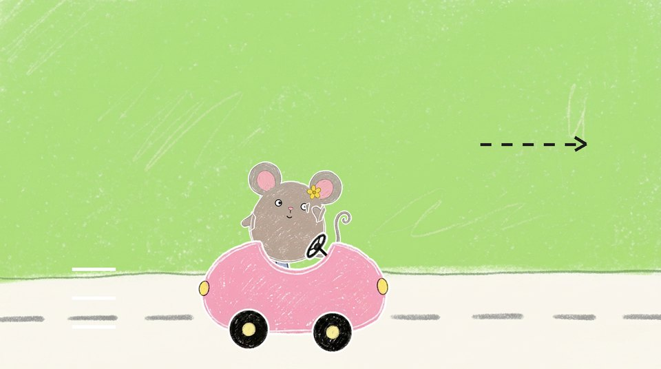
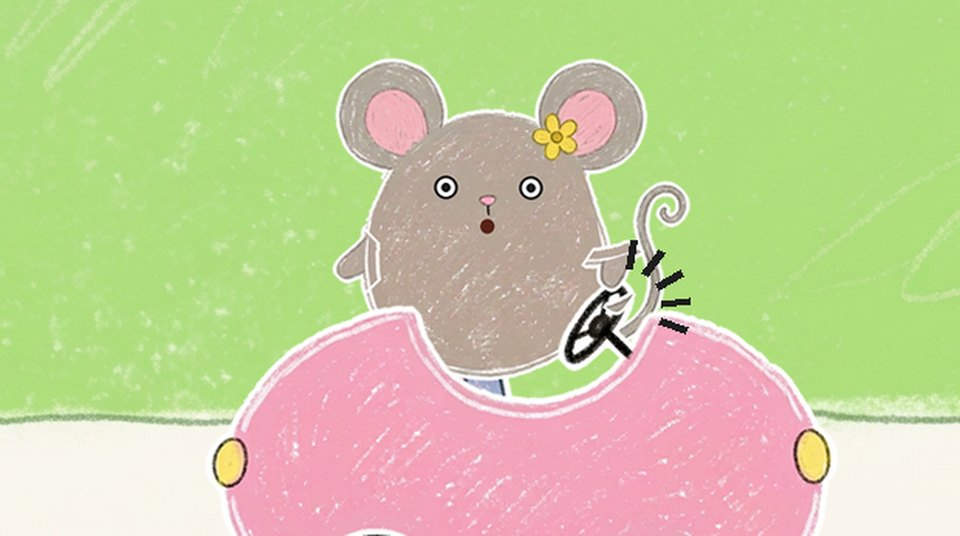
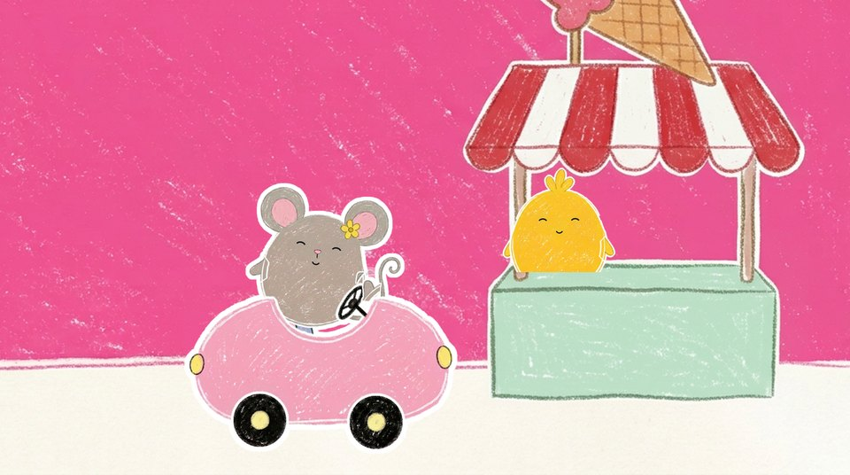
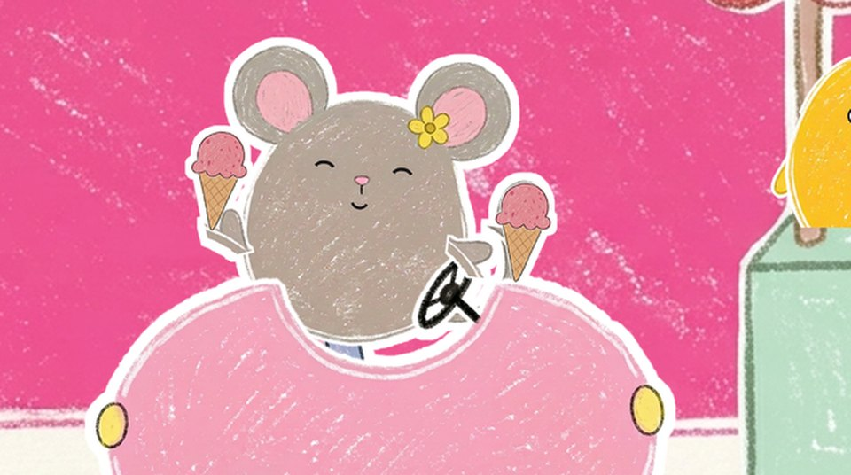
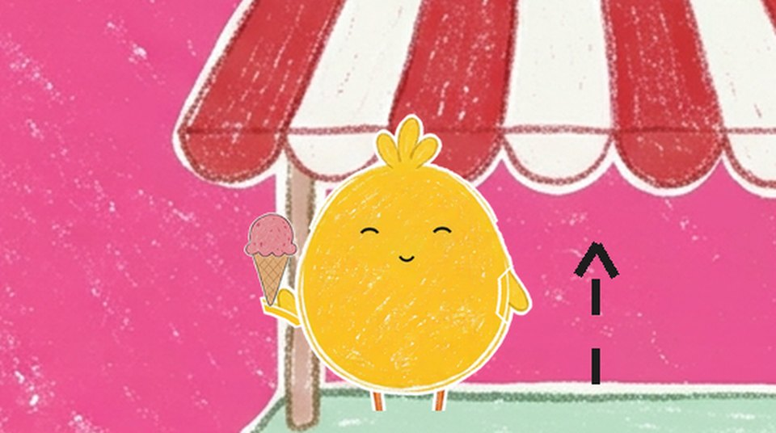
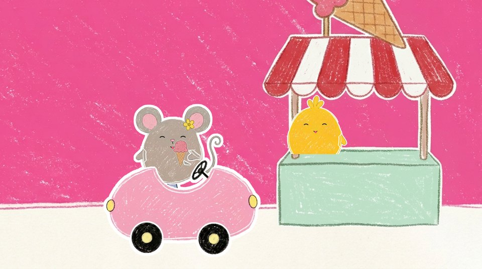

Rosa bilen storyboard
Avsnitt 005. Bilderna är byggda av de färdiga utklippen och bakgrunderna i assets/, med ansiktena ritade som i kit.js. Pilarna och strecken visar rörelsen. Alla tider är preliminära: sången låser dem.
Intro

(titeln syns, ingen röst)
Samma intro som 003 och 004 med nytt nummer och ny titel: Avsnitt 5 · Rosa bilen. Rosa vägg och en liten rosa bil på kortet.
fastKritan ritar

(skrrrrt)
Kritan ritar en rosa rundad form, långsamt. Bara formen, inga hjul.
1 papper
Frågan kommer innan teckningen är klar: kritan stannar och lyfter lite.
1 papper
(skrrt … skrrt … skrrt)
Gissningspausen, 4–5 s: ett svart hjul, ett hjul till och en liten ratt, ett i taget som ledtrådar.
1 papper
”En bil!”: bilen studsar en gång och kritan lyfter.
1 papperA · Vägen

(swoosh)
Zoom in i den ritade bilen: den blir musens bil på vägen. Musen sitter redan vid ratten.
zoom in
MUSEN: Pip pip!
Musen vinkar till tittaren. Grooven startar, instrumentalt. Inget talat ”Brum-brum, nu kör vi!”: det sjöngs nyss.
3 närbild musen
Hon lägger handen på ratten och tittar framåt.
3 närbild musen
Vers 1. Vägen glider, hjulen snurrar och bilen gungar i takt. En fjäril fladdrar förbi högt uppe, den enda rörelsen i bakgrunden.
2 körscenRefräng

Fast klippmönster, likadant båda gångerna. Rad 1 ”Rosa! (Rosa!)”: närbild musen, hon studsar på ”Rosa!” och klappar två gånger på ekot.
3 närbild musen
Rad 2 ”Rosa! (Rosa!)”: samma närbild. Upprepningen är poängen.
3 närbild musen
Rad 3 ”Rosa är min favoritfärg!”: helbild, musen håller ratten och ler, hjulen snurrar och vägen glider.
2 körscen
Rad 4: samma närbild som rad 1.
3 närbild musen
Rad 5: samma närbild som rad 1.
3 närbild musen
Rad 6 ”Rosa som ett glassberg!”: samma helbild som rad 3.
2 körscen
Rad 7 ”Brum, brum, tut, tut”: närbild musen, handen på tutan mitt i ratten, en tut per ”tut”.
3 närbild musen
Rad 8 ”vad är rosa? Titta ut!”: helbild, musen lutar sig ut över kanten och spanar framåt med handen över ögonen.
2 körscenA · Vägen

”Vad är rosa?”: busken med rosa blommor glider in från höger. Musen tittar dit.
2 körscen
”Titta där!”: vägen stannar mitt för busken och musen pekar på blommorna.
2 körscen
”sniff, sniff, mmm”: närbild, musen lutar sig mot blommorna med nosen uppåt och sniffar, doften slingrar fram till nosen. På ”mmm” blundar hon och ler.
3 närbild musen
”Vad är rosa?”: vägen glider igen, busken åker ut till vänster och en rosa ballong svävar in högt uppe i mjuka vågor.
2 körscen
”Titta där!”: vägen stannar och musen pekar upp på ballongen.
2 körscen
”upp, upp, upp”: närbild, musen lutar huvudet bakåt, tittar upp och pekar rakt upp, en gång per ”upp”.
3 närbild musen
Frågan till tittaren. Musen tittar ut mot tittaren med frågande min.
3 närbild musen
Pausen, 4–5 s. Ledtråd: musen blir lite skelögd och tittar på sin egen nos. Inget annat rör sig.
3 närbild musen
”Nosen är rosa – och öronen med!”: musen sätter fingret på nosen och ler.
3 närbild musen
”Vick, vick, vick!”: hon vickar på öronen, en gång per ”vick”, så att det rosa inuti syns.
3 närbild musenRefräng

Fast klippmönster, likadant båda gångerna. Rad 1 ”Rosa! (Rosa!)”: närbild musen, hon studsar på ”Rosa!” och klappar två gånger på ekot.
3 närbild musen
Rad 2 ”Rosa! (Rosa!)”: samma närbild. Upprepningen är poängen.
3 närbild musen
Rad 3 ”Rosa är min favoritfärg!”: helbild, musen håller ratten och ler, hjulen snurrar och vägen glider.
2 körscen
Rad 4: samma närbild som rad 1.
3 närbild musen
Rad 5: samma närbild som rad 1.
3 närbild musen
Rad 6 ”Rosa som ett glassberg!”: samma helbild som rad 3.
2 körscen
Rad 7 ”Brum, brum, tut, tut”: närbild musen, handen på tutan mitt i ratten, en tut per ”tut”.
3 närbild musen
Rad 8 ”vad är rosa? Titta ut!”: helbild, musen lutar sig ut över kanten och spanar framåt med handen över ögonen.
2 körscenKritsvep

(skrrrrt)
Kritsvep i kioskens rosa (#F06EAA), från vänster till höger.
kritsvepB · Glasskiosken

”Vad är rosa?”: Pip står i kioskfönstret. Bilen kör in från vänster.
4 helbild
”Titta där! Glassen är rosa”: bilen stannar framför kiosken och musen pekar på den stora glasstruten ovanför.
4 helbild
”mums, mums, mums”: närbild, musen slickar sig om munnen.
3 närbild musen
MUSEN: Pip pip! Hej, Pip! Två rosa glassar, tack!
Luckan i sången. Musen lutar sig mot fönstret, vinkar och beställer.
4 helbild
PIP: Pip! Varsågod! (pling)
Pip räcker fram två rosa glassar över disken och musen sträcker sig efter dem.
4 helbild
MUSEN: Tack!
Musen håller en glass i varje hand och ler.
4 helbild
Närbild Pip: hon tittar på musens två rosa glassar.
5 närbild Pip
PIP: Oj … jag är inte rosa.
Pip tittar ner på sig själv, lite ledsen (inte gråtande). Det är problemet.
5 närbild Pip
MUSEN: Den här är till dig, Pip!
Närbild musen: hon räcker fram den ena glassen mot fönstret.
3 närbild musen
Pip tar glassen. Musen har kvar sin egen.
4 helbild
PIP: Tack! (boing)
Närbild Pip, glad med den rosa glassen, hoppar. Inget talat ”nu är jag rosa”: det sjungs i vers 2.
5 närbild PipVers 2, en bild per rad. ”En glass till dig och en till mig”: musen och Pip håller upp var sin glass.
4 helbild
”rosa glass – mums, mums, mums”: båda slickar på glassen, en slick per ”mums”.
4 helbild
”Nu är Pip också rosa”: närbild Pip, stolt, håller glassen högt.
5 närbild Pip
”pip, pip, pip – hurra, hurra”: Pip hoppar med glassen och vinkar, musen slickar och ler.
4 helbild
(pop)
Sista refrängen, en bild per rad. ”Blommor – rosa!”: en liten bild av busken poppar upp högt på väggen. Båda håller upp glassen på ekot.
4 helbild
(pop)
”Ballong – rosa!”: ballongen poppar upp bredvid. Samma bild, en sak till.
4 helbild
(pop, pop, pop)
”Nos och glass och bil – rosa!”: nosen, glassen och bilen poppar upp, en per ord.
4 helbild
”Rosa är min favoritfärg”: närbild musen med glassen, ler mot tittaren.
3 närbild musen
”rosa som ett glassberg”: närbild Pip håller glassen högt.
5 närbild Pip
”Hej då, hej då – tut, tut!”: bilen kör iväg åt höger, musen vinkar och tutar på ”tut, tut”, Pip vinkar från fönstret. Ingen säger hej då: det sjungs.
4 helbildAvslutning

(swoosh)
Zoom ut: kiosken krymper till en teckning på papperet, med den rosa bilen och två rosa glassar.
zoom utOutro

Det vanliga outrot. Musen och Pip tittar fram vid kanten och vinkar.
fastAnteckningar
- Ingen säger det som sjungs. Ekot sjungs av kören. Varje rosa sak har en rörelse i bild i stället för en replik: sniff (06a), upp (07a), vick (08b), mums (11, 14).
- En bild per handling, så att historien går att läsa ur bilderna, och högst ett klipp per sjungen rad.
- Refrängen (05a–h och 09a–h) har ett fast klippmönster, ett klipp per sjungen rad, likadant båda gångerna: klapp-närbilden på rad 1, 2, 4 och 5, helbilden på rad 3 och 6, tutan på rad 7 och spanandet på rad 8. Klippen är ca 2,3 s (en takt i 104 bpm).
- Bilen är riggad i lager: kaross med säte, musen, kanten med ratten, musens armar och hjulen. Musen syns från midjan och upp, höger hand ligger på ratten när hon kör, och glassarna hålls i händerna. Halvgenomskinliga armar och öron visar rörelsen (vinka, vicka).
- Glasskiosken är spegelvänd och lite inzoomad i storyboarden: kiosken står till höger så att bilen fortsätter åt höger som på vägen, och musen och Pip når varandra över disken. Bilen har en tjockare vit kant mot den rosa väggen.
- Vers 2 och sista refrängen (14a–d, 15a–e) har en bild per rad. Småbilderna på väggen är busken, ballongen, musens huvud (nosen), glassen och bilen, i samma ordning som sången.
- Platshållare: inga, alla saker är riktiga bilder ur
assets/. - Sångraderna under varje bild läses ur sang.md (♪ sjungs, gul lapp = paus eller lucka). Fetstilt = repliker.
- Byggs om med
~/.claude/skills/ai-video/.venv/bin/python -I bygg.pyi den här mappen.